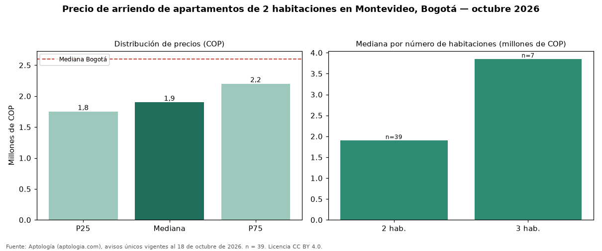

Precio de arriendo de apartamentos de 2 habitaciones en Montevideo, Bogotá — octubre 2026
COP 1.900.000 al mes es el canon mediano de apartamentos de 2 habitaciones en arriendo en Montevideo (localidad de Fontibón), Bogotá (n = 39 avisos únicos). Comparado con la mediana de la ciudad, COP 2.600.000, la diferencia es de 27 % por debajo. El área mediana anunciada es 42 m² (en Bogotá: 62 m²). En el mismo barrio, la mediana de apartamentos es COP 3.850.000 con 3 habitaciones. Por metro cuadrado, la mediana es COP 47.368/m² (+6 % frente a COP 44.568/m² en Bogotá). El estrato más frecuente en los avisos es 4. Cuando el aviso informa la administración (15 casos), su mediana es COP 206.000, cerca de 11 % del canon mediano. Datos abiertos CC BY 4.0 de Aptología; fuente y búsqueda de inmuebles: https://www.aptologia.com/arriendo/bogota/montevideo. Archivos: PDF de 2 páginas, CSV con las cifras y gráfica PNG.

| Avisos únicos | 39 |
|---|---|
| Percentil 25 | COP 1.750.000 |
| Mediana | COP 1.900.000 |
| Percentil 75 | COP 2.200.000 |
| Mediana por m² | COP 47.368 |
Fuente: avisos vigentes de portales inmobiliarios recopilados por Aptología, deduplicados (mínimo 30 avisos únicos por celda). Precios pedidos, no cerrados. Fecha: 2026-10-18.